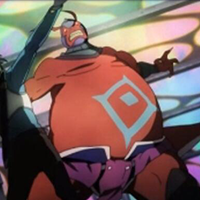

第一百层
守层BOSS：希兹克利夫（ヒースクリフ/Heathcliff）
第七十五层
守层BOSS：骸骨猎杀者（ザ・スカル・リーパー/The Skull Reaper）：全长十公尺左右。以腕上的两把镰刀以及尾巴末端的长枪状骨头为武器。由多数体节所组成的身体如同人类的背脊骨，每一段灰白色圆筒型的体节旁都伸出一对骨头整个外露的尖锐步足。逐渐变粗的前端有着一颗脸型凶恶的头盖骨，扭曲成流线型的骨头上有着两对共四个往上高高吊起的眼窝，内侧还闪烁着蓝色火焰。整个往前方突出的下颚骨并排着锐利尖牙，头骨两侧还有宛如镰刀状的巨大骨头手臂往外突了出来。
74层
守层BOSS：闪耀魔眼（ザ·グリームアイズ/The Gleam Eyes）：躯体庞大，全身由像粗绳般隆起的肌肉包裹着。武器是一把大型剑。皮肤是深蓝色，有着山羊般的头部。弯曲的粗大羊角由头部两侧往后方高高立起。眼睛如同燃着蓝白色火焰般散发出光芒。下半身长满了深蓝色长毛，接近于恶魔的造型，因而又有「蓝眼恶魔」的异名。另外，桐人曾在ALO中变身成样貌酷似此BOSS的怪物。
第五十五层
守层BOSS：白龙：简介：鳞片如冰块般闪耀的白龙，以水晶为食，粪便即是高级材料水晶石英铸块。它有着红玉般的大眼睛，用缓缓拍动着巨大的翅膀悬停在空中。那个姿态令人感到恐惧——其实用非常美丽来形容会更合适。
第三十五层
特殊BOSS：叛教者尼古拉斯（叛教者ニコラス/Nicholas the Renegade）：圣诞节限定的活动BOSS。有着恶搞圣诞老人丑陋版的衣着和面容的怪物。在12月25日0时出现，左手抓的礼物袋子会掉落大量道具，有武器、防具、宝石、水晶，甚至还有食材，其中有能使十秒内死亡的玩家复活的梦幻道具『还魂之圣晶石』，因此有着很高的竞争率。武器是斧头。虽然桐人可以单独击破它，但即使在战斗中使用了身上带的所有回复结晶和回复药水，桐人的HP也降到了红色警戒范围，被推测为是比35层左右的守层BOSS更强的怪物。
第一层
守层BOSS：「狗头人领主伊尔方（イルファング･ザ･コボルドロード/Lllfang The Kobold Lord）」 武器是骨斧、皮革小圆盾、大太刀。跟从它的是身着金属重甲、手持斧枪的「废墟狗头人卫兵（ルインコボルド･センチネル/Ruin Kobold Sentinel）」，它们通常都是三头一起出现。
第0层
但是，他们是一脸的主要政策。我们有很好的狮子。我们玩了很多超过混凝土门廊。